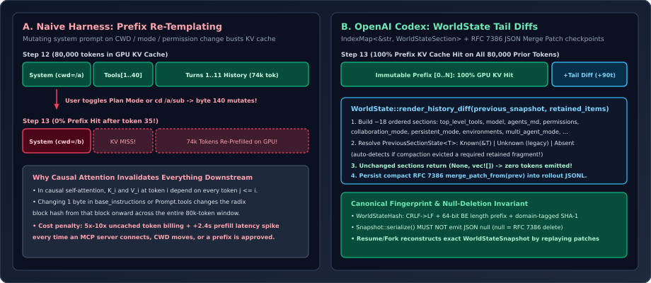

Append-Only Context State Machines: WorldState Sections & RFC 7386 Tail Diffs
Why rewriting a Jinja system-prompt template on every agent step silently destroys GPU radix prefix caches, and how OpenAI Codex’s WorldState subsystem (core/src/context/world_state/mod.rs and core/src/session/world_state.rs) models ~18 orthogonal slices of environment, tool, permission, and mode state as append-only tail transitions persisted via compact RFC 7386 JSON Merge Patches.
1. Why System-Prompt Re-Templating Is a Quadratic Tax
In an autoregressive Transformer with causal attention mask $M_{ij} = \mathbb{I}[j \le i]$, the key-value projections $(\mathbf{K}_i^{(\ell)}, \mathbf{V}_i^{(\ell)})$ at position $i$ and layer $\ell$ depend deterministically on the exact token prefix $(x_1, x_2, \dots, x_i)$ and the serialized tool definitions preceding it. Modern inference engines (such as vLLM’s Automatic Prefix Caching or OpenAI’s Responses API backend) partition token sequences into fixed-size blocks of $B$ tokens (typically $B = 16$ or $64$) and address GPU KV memory by chained cryptographic block hashes:
Look closely at what happens in a conventional agent harness that renders a fresh system prompt on every step—for example, interpolating Current directory: {{ cwd }}, Mode: {{ mode }}, or Approved commands: {{ rules }} near the top of the prompt. If the agent is at step $s = 25$ with $80{,}000$ tokens of accumulated code-reading and test logs, and the user clicks “Always allow cargo test” or toggles Plan Mode:
- One string inside block $k = 4$ (around token $250$) changes.
- Because $h_k$ chains $h_{k-1}$, every downstream block hash $h_4, h_5, \dots, h_{1250}$ changes simultaneously.
- All $79{,}750$ tokens of conversation history—despite being byte-for-byte identical—suffer a KV-cache miss, forcing a full GPU prefill pass and billing uncached input rates ($5\times\text{–}10\times$ higher than cached tokens).

WorldState freezes the prefix and emits minimal delta fragments strictly at the tail of input.2. Inside the WorldStateSection Trait & PreviousSectionState
Codex eliminates prefix mutation by making append-only state transitions a first-class abstraction in codex-rs/core/src/context/world_state/mod.rs. Rather than building a monolithic string, Session::build_world_state_for_step constructs an ordered WorldState holding an IndexMap<&'static str, Box<dyn ErasedWorldStateSection>>. Each slice of model-visible reality implements WorldStateSection:
/// What is known about a section's previously model-visible state.
pub(crate) enum PreviousSectionState<'a, T> {
/// No persisted snapshot or matching fragment exists in retained history.
Absent,
/// Retained history contains the section, but its typed snapshot is unavailable.
Unknown,
/// The exact persisted snapshot is available.
Known(&'a T),
}
pub(crate) trait WorldStateSection: Send + Sync + 'static {
const ID: &'static str;
type Snapshot: DeserializeOwned + Serialize;
fn should_persist(&self) -> bool { true }
fn matches_legacy_fragment(_role: &str, _text: &str) -> bool { false }
fn has_retained_fragment_matcher() -> bool { false }
fn matches_retained_fragment(_role: &str, _text: &str) -> bool { false }
/// Returns an optional snapshot update and ordered model-context updates.
/// Returning `None` for the snapshot leaves the stored comparison state unchanged.
fn render_diff(
&self,
previous: PreviousSectionState<'_, Self::Snapshot>,
) -> SectionTransition<Self::Snapshot>;
}Three subtle systems details in WorldState::render_history_diff (lines 506–554 of world_state/mod.rs) make this architecture resilient across session resumes, schema upgrades, and context compactions:
- Three-Valued Prior Knowledge (
Absentvs.Unknownvs.Known(&T)): When resuming an older session logged before a section persisted typed snapshots,has_legacy_fragmentscans retained history for matching XML tags (such as<permissions instructions>or<collaboration_mode>). If found without a snapshot, the section receivesPreviousSectionState::Unknown—instructing it to prepend an explicit “These instructions replace all previously provided...” notice rather than silently assuming clean slate! - Retained-Fragment Survival Check Across Compaction: Suppose the persisted snapshot says
permissionswas already emitted, but context compaction or manual history trimming evicted that message from the retainedResponseItemslice. Sections that sethas_retained_fragment_matcher() -> truetrigger a linear scanhas_retained_fragment(items, section); if their rendered fragment vanished from history,render_history_diffdowngradesKnown(prev)toPreviousSectionState::Absent, automatically re-hydrating the missing instructions! - Deterministic Insertion Order & Dynamic Extension Splicing: Because
WorldStateusesIndexMap(notHashMap), the ~18 built-in sections always render in a deterministic sequence across turns. Even external plugin contributors obey strict placement: inadd_extension_section(lines 484–498),"host_skills"is explicitly spliced immediately beforePermissionsState::IDviaIndexMap::shift_insertso prompt ordering never jitters.
3. The 18-Section Inventory Assembled Per Step
In core/src/session/world_state.rs, build_world_state_for_step registers each model-visible concern as an independent state machine. Notice how cleanly unrelated domains decouple:
Section ID | Rust Type | Persisted Snapshot | Tail Update Emitted on Mutation |
|---|---|---|---|
top_level_tools | TopLevelToolsState | BTreeMap<String, WorldStateHash> | ResponseItem::AdditionalTools + RemovedTools developer notice |
model | ModelInstructionsState | Model slug + instructions hash | Base developer instructions or <model_switch> notice |
token_budget / context_window_guidance | TokenBudgetContext | Window lineage IDs + guidance hash | Compaction window continuity & token-budget guidance |
agents_md | AgentsMdState | { directory, text } | <user_instructions> with replacement/removal header |
permissions | PermissionsState | Empty-policy hash + BTreeSet<Vec<String>> | Full <permissions instructions> or 1-line ApprovedCommandPrefixSaved |
collaboration_mode | CollaborationModeState | { mode, model, instructions } | <collaboration_mode> developer block |
persistent_mode | PersistentModeState | { instructions: Option<WorldStateHash> } | <persistent_mode> autonomous execution rules |
environments | EnvironmentsState | EnvironmentsSnapshot (per-env CWD, shell, date, net, FS) | <environment_context> user XML diff |
multi_agent_mode / model_catalog | MultiAgentModeState | Mode + subagent catalog hash | Subagent orchestration instructions & spawnable model catalog |
Notice too how environment_subagents in session/world_state.rs (lines 145–159) bounds subagent enumeration to both MAX_ENVIRONMENT_SUBAGENTS and MAX_ENVIRONMENT_SUBAGENT_BYTES—preventing an explosion of spawned child workers from blowing out the tail diff.
4. Collision-Proof WorldStateHash & RFC 7386 Rollout Checkpoints
Comparing multi-kilobyte prompt fragments by storing raw strings on every step in the rollout JSONL log would bloat session files on disk. Instead, Codex computes compact canonical SHA-1 digests via WorldStateHash (lines 364–398 of world_state/mod.rs):
impl WorldStateHash {
pub(crate) fn from_json(value: &Value) -> Self {
let mut value = value.clone();
value.sort_all_objects();
Self(format!("{:x}", Sha1::digest(value.to_string().as_bytes())))
}
pub(crate) fn from_fragment(fragment: &(impl ContextualUserFragment + ?Sized)) -> Self {
let mut hasher = Sha1::new();
match fragment.render() {
ContentItem::InputText { text } => {
hasher.update(b"codex-world-state-fragment-v1\0");
hash_component(&mut hasher, fragment.role());
hash_component(&mut hasher, &text);
}
content => {
let content = serde_json::to_vec(&content)
.unwrap_or_else(|_| unreachable!("ContentItem always serializes"));
hasher.update(b"codex-world-state-fragment-v2\0");
hash_component(&mut hasher, fragment.role());
hasher.update((content.len() as u64).to_be_bytes());
hasher.update(content);
}
}
Self(format!("{:x}", hasher.finalize()))
}
}
fn hash_component(hasher: &mut Sha1, value: &str) {
let value = value.replace("\r\n", "\n");
hasher.update((value.len() as u64).to_be_bytes());
hasher.update(value.as_bytes());
}Every line in those 30 lines fixes a real production edge case:
- Canonical JSON Key Sorting:
value.sort_all_objects()recursively sorts JSON object keys before hashing so MCP servers returning non-deterministic map key orders never trigger false-positive tool-schema diffs. - Cross-OS Line-Ending Normalization:
value.replace("\r\n", "\n")ensures resuming a session across Windows and WSL2 (sharing$CODEX_HOME) produces identical fragment hashes. - 64-Bit Big-Endian Length Framing + Domain Tags: Hashing
role || textnaively without length framing permits boundary-ambiguity collisions (e.g.,("user", "ab")vs.("use", "rab")). Prefixing a versioned NUL-terminated domain tag (codex-world-state-fragment-v1\0) and each component’s 8-byte big-endian length eliminates boundary collisions completely.
RFC 7386 JSON Merge Patch & The “Never Serialize to null” Rule
When persisting checkpoints to disk, WorldStateSnapshot stores sections: BTreeMap<String, Value> and writes only the RFC 7386 JSON Merge Patch delta between consecutive steps via merge_patch_from(&previous) (lines 430–463):
In RFC 7386, a JSON null value means delete this key from the target object. That explains the prominent invariant documented on WorldStateSection (line 316) and PersistentModeSnapshot (line 49 of persistent_mode.rs): a section’s Snapshot type must never serialize to top-level JSON null! For example, when PersistentModeState is disabled, it persists {"instructions": null} (a JSON object wrapping an optional field) rather than Option<WorldStateHash> directly—because serializing top-level None as null would delete the "persistent_mode" key from the merged snapshot and lose the distinction between “known disabled” and “never recorded”!
5. Questions worth answering
render_diff returns (None, vec![]) instead of (Some(snapshot), vec![])?Look at lines 538–543 of world_state/mod.rs: when render_diff returns None for its new snapshot (as PermissionsState and AgentsMdState do when nothing changed), render_with clones the existing entry from stored so merge_patch_from sees zero diff for that section—avoiding both prompt tokens and unnecessary rollout checkpoint writes.
AgentsMdState and PersistentModeState emit an explicit REMOVAL_NOTICE message at the tail when turned off, instead of deleting their earlier message from history?Deleting an earlier message from index $j < N$ in input mutates the sequence at position $j$, invalidating the GPU KV cache for every token in $[j+1, N]$ and breaking WebSocket previous_response_id prefix continuation. Appending a 12-token developer/user notice (“The previously provided instructions no longer apply.”) at index $N+1$ retires the instruction semantically while preserving $100\%$ of the cached KV blocks!